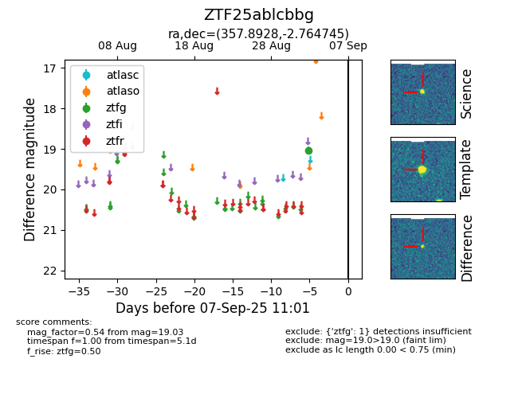

FINK: ZTF25ablcbbg
Lasair: ZTF25ablcbbg
ALeRCE: ZTF25ablcbbg
ZTF25ablcbbg (ztf,fink)
equatorial (ra, dec) = (357.8928,-2.76474)
galactic (l, b) = (89.9224,-61.73781)

last ztfg=19.03
1 ztfg detections